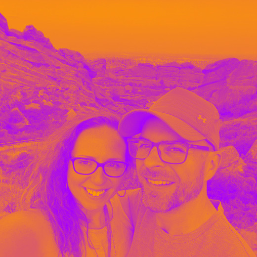

About
Hey I'm Griff. For much of my professional life I've been a software test engineer. I appreciate and enjoy high quality accessible software and the testing processes required to sustain such quality. I also enjoy front and back end development.
This site exists to share a bit about myself as well as function as a sort of sandbox where I can experiment with different web technology. I intend to make this site as accessible as possible with respect to responsive design and WCAG (Web Content Accessibility Guidelines).
Outside of work, I love spending time with my wife Kate and our dogs Grace and Zeppelin. We enjoy various entertainment in Madison Wisconsin such as stand up comedy, live music, art exhibits, and nature conservancies.
I'm extremely passionate about learning. The process of learning about a subject that I know nothing about is very satisfying. Reading is my preferred learning method. I love non-fiction books about science, history, astronomy, technology, and more. Some of my favorites can be found in the Books page.
We live in an incredible time with access to an abundance of knowledge. It's a huge missed opportunity for one to exist and not learn as much as possible about the world, solar system, galaxy, universe, multiverse, or whatever reality we live in.
Other interests of mine include gaming, art, and music. I dabble in content creation for the popular trading card game Magic: The Gathering. High rank strategy and gameplay videos can be found on my YouTube channel (see Links page). I've always been a huge Nintendo fan as well and currently am enjoying lots of games on Nintendo Switch.
As for art, I like many different styles and subject matter such as anime, comic, digital, nature, pinup, psychedelic, traditional, and more. I enjoy traditional drawing and using powerful tools like Photoshop and Procreate for digital artwork. Some of my stuff can be found in the Art page.
As for music, I also like many different styles such as classical, metal, phonk, and more. However, my absolute favorite style, and it's not even close, is psychedelic trance. I've dabbled in producing music of this style a bit using tools such as Ableton Live and other digital audio workstation programs.
If you wish to reach out for professional inquiry or just want to say hi on social media please see the Links page for the appropriate place to do so (LinkedIn, Twitter, etc.). ☮